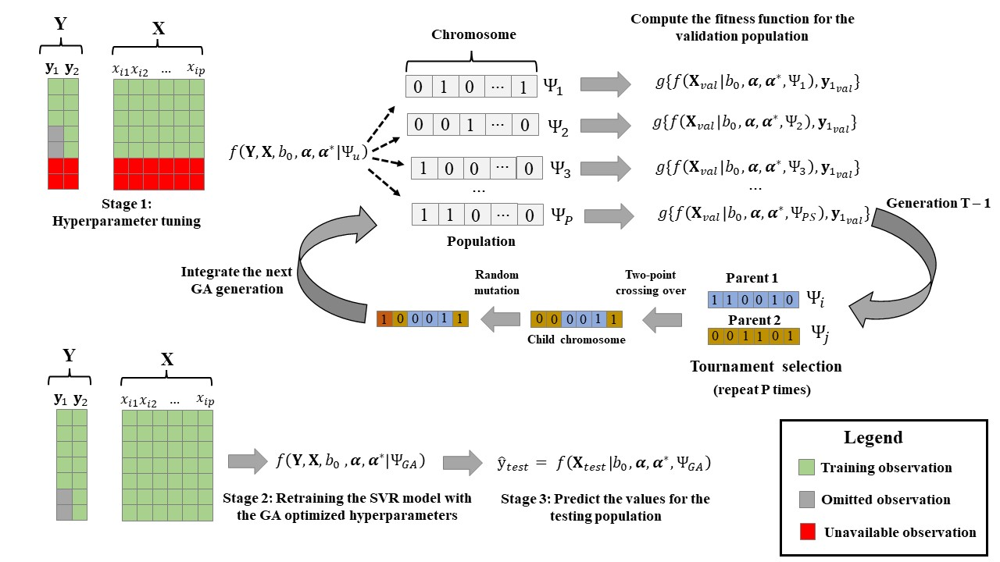
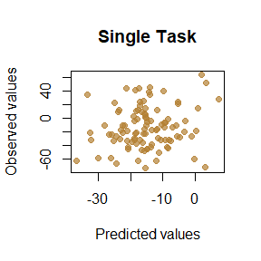
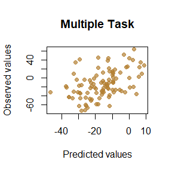
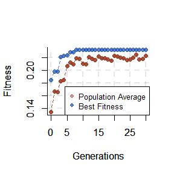
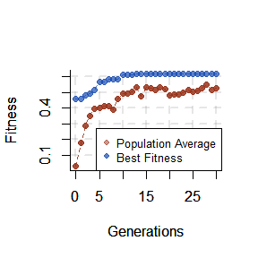

qmtsvr is a R package for fitting (Quasi) Multi-task Support Vector Regression methods with a focus on the prediction of complex traits using genomic data. The package expands the commonly used ɛ -insensitive loss function for augmenting the number of observations for a target variable (the trait of interest) by aggregating the complementary information of \(t – 1\) correlated traits. The high computational burden for the hyperparameter fine-tuning is alleviated by considering trait-common values for the model bias, regularization parameter, and epsilon constant, leading to an optimization problem that can be handled in standard quadratic programming libraries. The H-dimensional hyperparameter space (with \(H = 2 + t^2\), where t is the number of traits) is then optimized via a stochastic evolutionary algorithm.
The following data augmentation scheme is employed:
\[\begin{equation}
\arg min_{a,a*}
\frac{1}{2}
\begin{bmatrix}
\boldsymbol{\alpha^{(1)}} - \boldsymbol{\alpha^{*(1)}}\\
\boldsymbol{\alpha^{(2)}} - \boldsymbol{\alpha^{*(2)}}\\
\vdots\\
\boldsymbol{\alpha^{(t)}} - \boldsymbol{\alpha^{*(t)}}\\
\end{bmatrix}^{T}
\boldsymbol{Q}
\begin{bmatrix}
\boldsymbol{\alpha^{(1)}} - \boldsymbol{\alpha^{*(1)}}\\
\boldsymbol{\alpha^{(2)}} - \boldsymbol{\alpha^{*(2)}}\\
\vdots\\
\boldsymbol{\alpha^{(t)}} - \boldsymbol{\alpha^{*(t)}}\\
\end{bmatrix}
+
\epsilon
\begin{bmatrix}
\boldsymbol{\alpha^{(1)}} - \boldsymbol{\alpha^{*(1)}}\\
\boldsymbol{\alpha^{(2)}} - \boldsymbol{\alpha^{*(2)}}\\
\vdots\\
\boldsymbol{\alpha^{(t)}} - \boldsymbol{\alpha^{*(t)}}\\
\end{bmatrix}^{T}
\boldsymbol{1_{n}} \bigotimes \boldsymbol{1_{t}} -
\begin{bmatrix}
\boldsymbol{\alpha^{(1)}} - \boldsymbol{\alpha^{*(1)}}\\
\boldsymbol{\alpha^{(2)}} - \boldsymbol{\alpha^{*(2)}}\\
\vdots\\
\boldsymbol{\alpha^{(t)}} - \boldsymbol{\alpha^{*(t)}}\\
\end{bmatrix}^{T}
\begin{bmatrix}
\boldsymbol{y^{*(1)}}\\
\boldsymbol{y^{*(2)}}\\
\vdots\\
\boldsymbol{y^{*(t)}}\\
\end{bmatrix}
(1)
\end{equation}\] \[ s.t
\begin{cases}
0 \leq \alpha^{(k)}_{i},\alpha^{*(k)}_{i} \leq C, i = 1,2, ..., N \\
\begin{bmatrix}
\boldsymbol{\alpha^{(k)}} - \boldsymbol{\alpha^{*(k)}}\\
\end{bmatrix}^{T}\boldsymbol{1_{n}} = 0, k = 1,2, ..., t
\end{cases}
\]
where t refers to the number of traits, \(\boldsymbol{\alpha^{(k)}}\) and \(\boldsymbol{\alpha^{*(k)}}\) are the vectors of positive Lagrange multipliers related to the trait k, \(\boldsymbol{1_{t}}\) is a t-dimensional vector of ones, ⊗ is the Kronecker product, \(\boldsymbol{y^{*(1)}}, \boldsymbol{y^{*(2)}}, ..., \boldsymbol{y^{*(t)}}\) are vectors of observed values for t target variables standardized to the same scale, and Q is a block symmetric matrix, partitioned into \(t^{2}\) blocks of dimension N x N. The Q matrix in (1) is a multi-task scaled RBF kernel, proposed as follows:
\[\begin{equation}
\boldsymbol{Q} =
\begin{bmatrix}
exp(-\theta_{11}\boldsymbol{D^{2}}p^{-1}) & \cdots & \rho_{1t}exp(-\theta_{1t}\boldsymbol{D^{2}}p^{-1}) \\
\vdots & \ddots & \vdots \\
\rho_{t1}exp(-\theta_{t1}\boldsymbol{D^{2}}p^{-1}) & \cdots & exp(-\theta_{tt}\boldsymbol{D^{2}}p^{-1}) \\
\end{bmatrix}
(2)
\end{equation}\] where D is an \(N \times N\) Euclidean distance matrix (EDM) for the markers’ vectors, considering all genotyped individuals for at least one of the analyzed traits, p is some scalar representing the number of predictor variables (e.g., number of SNPs), \(\theta_{kk}\) and \(\theta_{kk^{'}}\) are trait-specific and trait-common bandwidth hyperparameters, and \(\rho_{kk^{'}}\) is some constant between -1 and 1 indicating the magnitude and direction of the association between traits \(k\) and \(k^{'}\). The qmtsvr.dist function can be used for fast computing unweighted and weighted EDMs.
Using the dual formulation in eq. (1), the function for predicting yet-to-be-seen observations depends solely on the mapping kernel and can be written as \(f(\boldsymbol{x_{i}},\boldsymbol{x_{i}}) = \sum^{(N \times t)}_{j=1}(\alpha^{(k)}_{j}-\alpha^{*(k)}_{j}){Q_{ij}} + b_{0}\), for k = 1, 2, … t (3), in which \(Q_{ij}\) maps the relationship in the feature space between the individual i and every column j in the matrix \(\boldsymbol{Q}\).
The predicted value \(f(\boldsymbol{x_{i}}\) is then returned to the original scale by using the proper math. Equations 1, 2 and 3 are automatically used with the function qmtsvr.fit. Notice that the bias \(b_{0}\) value, the regularization hyperparameter (\(C\)), and the epsilon threshold (\(\epsilon\)) are assumed to be constant for all traits in equations 1 and 3, consequently, one can fit this extended SVR model with the standard SMO algorithm, available in most kernel-based methods libraries, just by precomputing the block matrix \(\boldsymbol{Q}\). Our implementation uses the kernlab package (Karatzoglou et al., 2004) as the backend for solving the quadratic programming problem. The model has \(2 + t^{2}\) hyperparameters to be tuned, the global \(C\) and \(\epsilon\) constants, besides the kernel bandwidth hyperparameters (\(\theta_{kk^{'}}\)) and the association constants (\(\rho_{kk^{'}}\)) in \(\boldsymbol{Q}\).
The function qmtsvr.GA uses a genetic algorithm (GA) for finding an optimal hyperparameter combination that maximizes the QMTSVR prediction ability. This stochastic evolutionary algorithm compares a population of candidate models (with binary arrays representing different hyperparameter combinations or the chromosome in the GA terminology) according to their fitness scores (fs). The arrays for the models with the best fs are then selected and crossed for composing the next generation. The resulting child arrays inherit features from both parent chromosomes from the previous generation. The relevant parameters in the present GA implementation are the population size (PS), the number of generations (NG), crossover rate (CR), mutation rate (MR), and Tournament Size (tsize). The PS indicates the number of models tested per generation; the CR controls the rate that a child’s chromosome will result from the crossing-over of two parents instead of being an identical copy of one of them. The MR is the probability of a single bit (or gene) on the binary array changing randomly, implying slight modifications to the current model. The selection operator in the GA was the Tournament Selection, i.e., for each child chromosome to be created, tsize individuals are drawn at random from the current population and the one with the highest fs is selected for integrating the pair of crossing chromosomes.
The GA-based fine-tuning of the QMTSVR hyperparameters is illustrated in Figure 1. 
Figure 1. The optimization process of the QMTSVR method via genetic algorithm (GA). During the GA-based fine-tuning each specific hyperparameter set is coded as a binary array (the chromosome). The fitness function is computed for each chromosome based on the predictive ability that this specific hyperparameter set achieves in the validation population (omitted during the GA-based optimization). The tournament selection operator selects a pair of individuals with the best fitness scores of two subsets randomly drawn with replacements from the current population. A child chromosome is created for each chromosome pair sampled with the selection operator and P new chromosomes are created for the next generation using the two-point crossing-over and mutation processes. The v worst individuals (set of hyperparameters) of the current generation are replaced with the v best individuals from the previous generation. The GA algorithm repeats the process for T generations. The best hyperparameter set (\(Ψ_{GA}\)) is then used for retraining the model with all available observations.
The package main functions are:
Returns an \(N \times N\) (weighted) Euclidean Distance Matrix (EDM) based on a numeric matrix \(X_{N \times p}\).
the qmtsvr.dist function has the following arguments:
x | A \(n \times p\) matrix of genotypes or other features (rows for individuals, columns for predictor variables)w | A vector of size \(p\) containing the weighting factors to be assigned to the features in \(\boldsymbol{X_{N \times p}}\) during the EDM computation (Optional).u | the power of the final EDM values (default = 2).verbose A logical argument indicating if the time elapsed for computing the EDM must be printed (default = FALSE).vardiag | A logical argument specifying if EDM diagonal elements must have variation around zero (default=FALSE). If vardiag= TRUE, the zero values in EDM diagonals will be replaced with \(1-(\frac{d}{\sqrt d * \sqrt m})\) in which \(\boldsymbol{d}\) is the diagonal of \(\boldsymbol{XX^{T}}\) and m is the median of \(\boldsymbol{d}\).Fits a QMTSVR model with with user pre-defined hyper parameters. Returns an numeric \(N \times t\) prediction matrix.
the qmtsvr.fit function has the following arguments:
Y | An \(n \times t\) numeric matrix of correlated response variables, where \(N\) is the number of observations and \(t\) is the number of traits (missing values are coded as NA).X | A \(N \times p\) matrix of features (e.g., SNP markers), in which \(p\) is the number of features.set_hyper | a list specifying the QMTSVR model hyperparameters.w | A list containing the trait-specific and trait-common weighting factors to be assigned to the features in \(\boldsymbol{X_{N \times p}}\) during the EDM computation (Optional).D | a list with all pre-computed EDM. It can be passed as an argument alternatively to the matrix \(\boldsymbol{X_{N \times p}}\) (Optional).verbose | A logical argument indicating if the function log must be printed at the console.vardiag | A logical argument specifying if diagonal elements of the EMD should have variation around zero. (default=FALSE). If vardiag = TRUE, the zero values in the EMD diagonal will be replaced with: \(1-(\frac{d}{\sqrt d * \sqrt m})\), in which \(\boldsymbol{d}\) is the diagonal of \(\boldsymbol{XX^{T}}\) and m is the median of \(\boldsymbol{d}\). This quantity yields a variation around 1 for the diagonal elements of the RBF kernel, computed as \(K = e^{-b*D^{2}}\), where \(b\) is a hyperparameter constant and \(\boldsymbol{D}\) is the Euclidean Distance Matrix. When the SNP matrix is used as input, the diagonal elements in \(\boldsymbol{K}\) correlate with those from the \(\boldsymbol{G}\) matrix presented in VanRaden (2008).Optimizes the QMTSVR hyperparameters using a Genetic Algorithm.
the qmtsvr.GA function has the following arguments:
Y | A \(N \times t\) matrix of response variables, where N is the number of observations and t is the number of traits (missing values are coded as NA).X | \(N \times p\) matrix of features (e.g., SNP markers ), in which \(p\) is the number of columns.hyper | A list object containing the name specification and range for each hyperparameter to be optimized in the QMTSVR model.ngen | The number of generations to run in the Genetic Algorithm.popsize The population size (PS) to grow, it indicates the number of models tested per generation.mut_rate | The mutation rate (e.g., 0.05) of the genetic algorithm. It is the probability of a single bit (or gene) on the binary array changing randomly, implying slight modifications to the current model.cross_rate | The crossing over (CR) rate for the genetic algorithm. The CR controls the rate that a child’s chromosome will result from the crossing-over of two parents instead of being an identical copy of one of them.tsize | The tournament size to be used in the GA(default = 5). For each child chromosome to be created, tsize individuals are drawn at random from the current population and the one with the highest fitness scores is selected for integrating the pair of crossing chromosomes.elitism | The number of models with the best performance in the current generation to keep for the next generarion (default = 1).cost | The cost function to be optimized in the GA. The values accepted are: cor, rmse and mae for Pearson correlation between observed and predicted values, Root-mean squared error and Mean absolute error, respectively. The current version only accepts cost functions for continuous target variables.w | A vector of size \(p\) with the weighting factors to be assigned to the features in \(\boldsymbol{X}\) for the EDM computation (Optional).tgTrait | A constant for indexing the column where the target variable is located at Y (default = 1).val_pop | A character object indicating the validation strategy adopted in the GA. cross indicates cross-validation, custom indicates that the cost for an specific group must be optimized and closest indicates that the target population to be optimized will be composed by the closest individuals (based on the Euclidean distance of \(\boldsymbol{X}\)) to those with NA values in the target variable.nfolds | If val_pop = cross, nfolds is the number of folds to be used in the cross-validation.k | If val_pop = closest, k is the number closest neighbors to be identified in the EDM for each NA value.custom_val | If val_pop = custom, custom_val is a vector of size N assuming 0 (train) and 1 (validation) values for indicating which individual will compose the validation population in the GA.vartype | The target variable class. The current version only accepts continuous.MRCR | it can be fixed (default) or dynamic; if the second option is chosen, the GA will gradatively reduce CR and increase MR when the algorithm get stuck in local minima.verbose | A logical argument indicating if the GA output must be printed at the console.dopar A logical argument indicating if the GA will be performed using a parallel process. It will speed up the GA run time. Attention: in the current version it will only work in Linux machines.ncores | If dopar = TRUE, the number of cores to be used must be specified (default = number of cores available - 1).In this section, we provide some examples on how to use each function of the qmtsvr package.
library(qmtsvr)
# Create toy data
values = rnorm(50, 0, 1)
X = matrix(values, 5, 10)
D = qmtsvr.dist (x=X)
D
#> [,1] [,2] [,3] [,4] [,5]
#> [1,] 0.000000 4.408274 5.803016 4.266822 3.946747
#> [2,] 4.408274 0.000000 3.700128 2.300411 2.019701
#> [3,] 5.803016 3.700128 0.000000 3.491858 3.432694
#> [4,] 4.266822 2.300411 3.491858 0.000000 1.897384
#> [5,] 3.946747 2.019701 3.432694 1.897384 0.000000
#Computing the distance with the R base function
D2 = dist(X,method = "euclidean",diag = T)
D2
#> 1 2 3 4 5
#> 1 0.000000
#> 2 4.408274 0.000000
#> 3 5.803016 3.700128 0.000000
#> 4 4.266822 2.300411 3.491858 0.000000
#> 5 3.946747 2.019701 3.432694 1.897384 0.000000
# Give more weight for the columns 1 and 5
w = rep(1,50)
w[1] = 5
w[5] = 15.5
D2 = qmtsvr.dist (x=X, w = w)
D2
#> [,1] [,2] [,3] [,4] [,5]
#> [1,] 0.000000 8.664552 15.367713 10.537977 9.963409
#> [2,] 8.664552 0.000000 7.896988 3.422941 4.032030
#> [3,] 15.367713 7.896988 0.000000 5.771977 6.575388
#> [4,] 10.537977 3.422941 5.771977 0.000000 2.832653
#> [5,] 9.963409 4.032030 6.575388 2.832653 0.000000library(qmtsvr)
#Load dataset
pheno = data_ex$mydata[1:300,5:7]
head(pheno)
#> EBV_A EBV_B EBV_C
#> 1 4.8772368 -19.8837656 -15.63683
#> 2 0.4379619 -0.8912274 -60.40955
#> 3 -33.5370259 -6.0417011 -56.89957
#> 4 -13.8551773 55.6229989 17.61085
#> 5 -11.7870029 -7.9005613 22.94181
#> 6 -34.1528759 13.1498998 -60.99747
X = data_ex$SNP[1:300,]
obs = pheno #copy the observations matrix
pheno[200:300,1] = NA #omit the last 100 observations
#Setting arbitrary hyperparameters values for a single trait SVR model
hyper_st = list("C" = 2, "eps" = 0.009, "b1" = 2.5)
#Predict the values
YHAT = qmtsvr.fit(Y=as.matrix(pheno[,1]), X = X, set_hyper = hyper_st, verbose = F, vardiag = T)
#Setting arbitrary hyperparameters values for a multi-trait SVR model with 3 traits
hyper_mt = list("C" = 0.2, "eps" = 0.09, "b1" = 0.15,
"b2"= 6.67, "b3" = 2.21,"b4" = 4.26,
"b5" = .53, "b6" = 1.4, "r1" = -0.4,
"r2" = 0.5, "r3" = 0.14)
#The sequence of bandwidth parameters (b) according to the traits (t1, t2, t3) is:
# t1 t2 t3
# t1: b1 b2 b3
# t2: . b4 b5
# t3: . . b6
#The sequence of weights r according to the traits (t1, t2, t3) is:
# t1 t2 t3
# t1: . r1 r2
# t2: . . r3
# t3: . . .
#Predict the values
YHAT2 = qmtsvr.fit(Y=pheno, X = X, set_hyper = hyper_mt, verbose = T, vardiag = T)
#>
#>
#> #------- The University of Wisconsin - Madison --------#
#> #------ Department of Animal and Dairy Sciences -------#
#> # /) ( #
#> # .-._((.~~.))_.-. #
#> # `-. @@ .-.- #
#> # / .o--o. #
#> # ( ( .__. ) ) #
#> #------------------------------------------------------#
#> # QMTSVR v.0.1.4 (beta) - June 2022 #
#> # (Quasi)Multitask support vector regression #
#> # Anderson A.C. Alves (alves.zootecnista@gmail.com) #
#> #------------------------------------------------------#
#>
#> #--| Euclidean Distance Matrices (EDM) not provided |--#
#> Computing EDMs...
#> Done...
#> Building the kernel blocks...
#> Done...
#Correlate the predictions with the observed values
cor(YHAT[200:300,1],obs[200:300,1]) #Single Task
#> [1] 0.1557956
cor(YHAT2[200:300,1],obs[200:300,1]) #Multiple Task
#> [1] 0.4573185
#compute Root-mean squared error
mean(sqrt((YHAT[200:300,1] - obs[200:300,1])^2))#Single Task
#> [1] 23.76864
mean(sqrt((YHAT2[200:300,1] - obs[200:300,1])^2))#Multiple Task
#> [1] 21.26071
#plot the results
plot(YHAT[200:300,1],obs[200:300,1], pch = 19,
lty = 2, xlab = "Predicted values",
ylab = "Observed values",
col = rgb(0.7,0.5,0.20,0.7), main = "Single Task")
plot(YHAT2[200:300,1],obs[200:300,1],
pch = 19, lty = 2, xlab = "Predicted values",
ylab = "Observed values", col = rgb(0.7,0.5,0.20,0.7), main = "Multiple Task")
library(qmtsvr)
#Load dataset
pheno = data_ex$mydata
X = data_ex$SNP
head(pheno)
#> animal TBV_A TBV_B TBV_C EBV_A EBV_B EBV_C
#> 1 Anim_1 1.578131 -27.092955 -30.25875 4.8772368 -19.8837656 -15.63683
#> 2 Anim_2 -22.669915 -9.775277 -56.16842 0.4379619 -0.8912274 -60.40955
#> 3 Anim_3 -33.858646 5.144064 -49.76587 -33.5370259 -6.0417011 -56.89957
#> 4 Anim_4 -35.199621 32.460694 25.20912 -13.8551773 55.6229989 17.61085
#> 5 Anim_5 -19.520892 12.923652 21.49241 -11.7870029 -7.9005613 22.94181
#> 6 Anim_6 -46.887736 -8.594900 -84.18479 -34.1528759 13.1498998 -60.99747
hyper_st = list(c("C",0.01,5,128), c("eps",0.001,0.2,128), c("b1",0.1,7,128))
#The regularization parameter ("C") will range from 0.01 to 5, with 128 values tested within this interval
#The epsilon constant ("eps") will range from 0.001 to 0.2, with 128 values tested within this interval
#The bandwidth parameter ("b1") will range from 0.1 to 7, with 128 values tested within this interval
#The last 50 individuals will be used as the GA internal validation population
custom_val = c(rep(0,150),rep(1,50))
#Run the GA for a single-task SVR (as illustration only the first 200 values are used)
st_svr = qmtsvr.GA(Y = as.matrix(pheno[1:200,5]),
X = X[1:200,], hyper = hyper_st,
ngen = 30, popsize = 50, mut_rate = 0.02,
cross_rate = 0.95, elitism = 2,
cost = "cor", tsize = 5,
val_pop = "custom",
custom_val=custom_val,
vardiag=T, verbose = F)
#Get the list with optimized hyperparameters
st_svr$set_hyper
#> C eps b1
#> 0.01000000 0.09501575 7.00000000
#Plot GA history
plot.GA(st_svr)
#QMT-SVR with 3 response variables
#Define the range for hyperparameters in a multi-task SVR with 3 variables
hyper_mt = list(c("C",0.1,5,128), c("eps",0.001,0.3,128),
c("b1",0.1,7,128), c("b2",0.1,7,128), c("b3",0.1,7,128),
c("b4",0.1,7,128), c("b5",0.1,7,128), c("b6",0.1,7,128),
c("r1",-0.9,0.9,128),c("r2",-0.9,0.9,128),c("r3",-0.9,0.9,128))
#Run the GA for optimizing the model hyperparameters
mt_svr = qmtsvr.GA(Y = pheno[1:200,5:7], X = X[1:200,],
hyper = hyper_mt, ngen = 30,
popsize = 50,mut_rate = 0.02,
cross_rate = 0.95, elitism = 2,
cost = "cor", tsize = 5, val_pop = "custom",
custom_val = custom_val, vardiag=T, verbose = F)
#Get the list with optimized hyperparameters
mt_svr$set_hyper
#> C eps b1 b2 b3 b4 b5 b6
#> 0.52440945 0.06927559 0.37165354 7.00000000 5.53307087 2.81653543 5.20708661 2.27322835
#> r1 r2 r3
#> -0.61653543 0.67322835 0.75826772
#Plot GA history
plot.GA(mt_svr)
Karatzoglou A., Smola A., Hornik K., and Zeileis A. (2004). kernlab - An S4 Package for Kernel Methods in R. J. Stat. Soft. 11:1–20. doi: https://doi.org/10.18637/jss.v011.i09
VanRaden P. M. (2008). Efficient Methods to Compute Genomic Predictions. J. Dairy Sci. 91:4414-4423. doi: https://doi.org/10.3168/jds.2007-0980